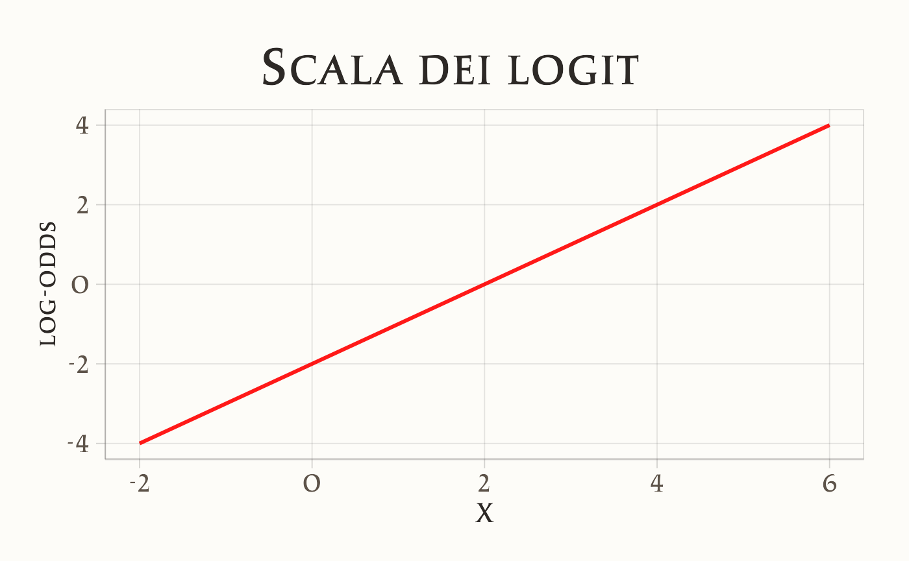
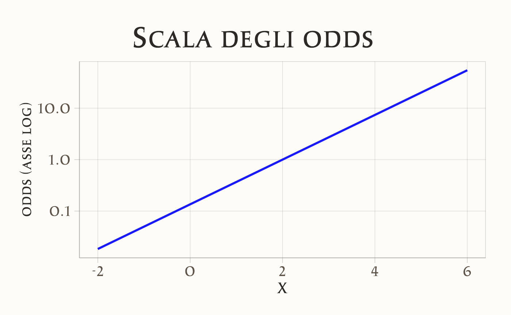
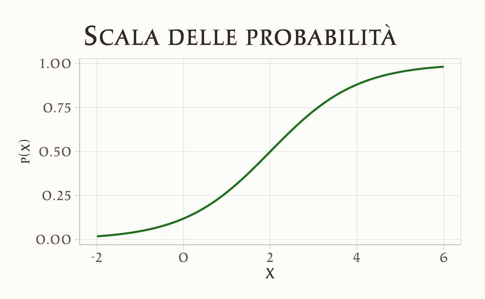
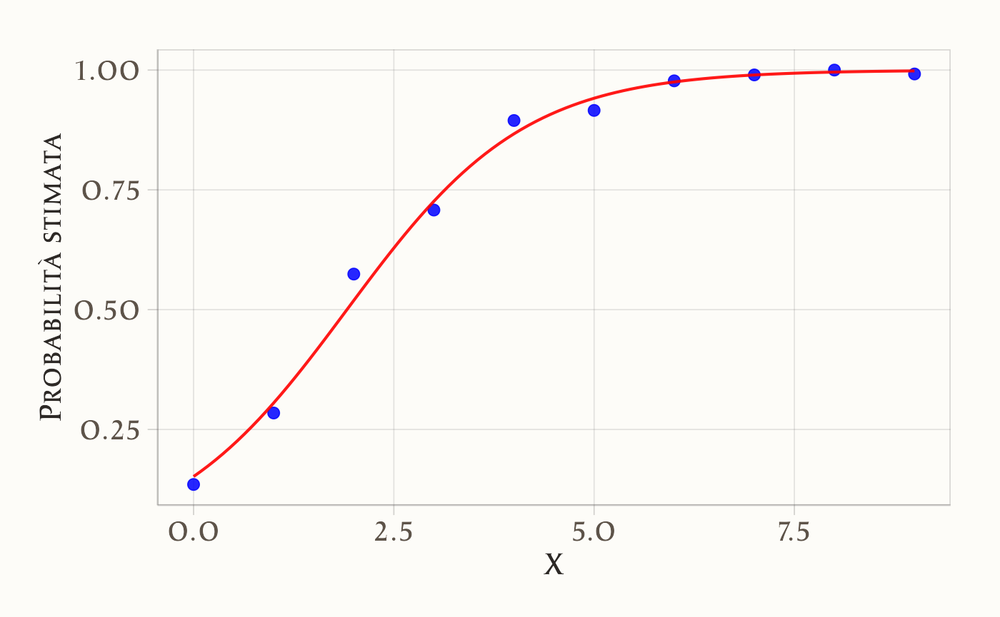
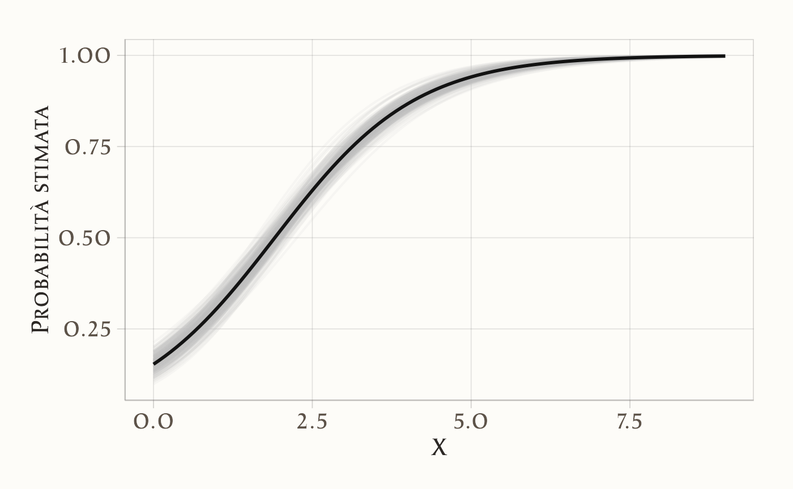

here::here("code", "_common.R") |>
source()
# Load packages
if (!requireNamespace("pacman")) install.packages("pacman")
pacman::p_load(brms, cmdstanr, posterior, brms, bayestestR, insight)36 Regressione logistica con Stan
Introduzione
La regressione logistica è un’estensione del modello lineare che consente di analizzare esiti dicotomici, cioè variabili che assumono soltanto due valori (ad esempio: successo/insuccesso, presente/assente, risposta corretta/errata). Situazioni di questo tipo sono molto frequenti nella ricerca psicologica: pensiamo alle risposte a item vero/falso, alla presenza o assenza di un sintomo clinico, oppure alla scelta tra due alternative in un compito sperimentale.
A differenza della regressione lineare, non modelliamo direttamente la probabilità di successo, ma il suo logit, ossia il logaritmo del rapporto tra odds di successo e odds di insuccesso. Questo passaggio ha due vantaggi fondamentali: da un lato mantiene la struttura lineare del modello, dall’altro assicura che le probabilità restino confinate tra 0 e 1, rispettando così la natura del fenomeno da descrivere.
In questo capitolo ci concentreremo sulla regressione logistica bivariata, cioè con un solo predittore, continuo o categoriale. L’obiettivo è duplice: da un lato, imparare a stimare i coefficienti del modello in un’ottica bayesiana utilizzando Stan; dall’altro, capire come interpretare questi coefficienti su scale diverse: in termini di probabilità, di odds ratio e di risk ratio. Vedremo in particolare come un coefficiente unico possa assumere significati diversi a seconda della scala di lettura, e come il caso di un predittore dicotomico (dummy) sia in realtà una specializzazione del modello con variabile continua.
La regressione logistica rappresenta dunque un primo passo importante nel percorso dei modelli lineari generalizzati (GLM), ampliando le possibilità dell’analisi statistica ben oltre il caso della regressione lineare e preparandoci ad affrontare dati e domande di ricerca più vari e realistici.
Panoramica del capitolo
- specificare una regressione logistica con un predittore continuo;
- interpretare i coefficienti sulla scala dei logit, degli odds e delle probabilità, ricavando in modo chiaro le relazioni algebriche tra \(RD\), \(OR\) e \(RR\);
- stimare il modello con approccio frequentista (glm) e bayesiano (brms/Stan), comprendendo l’effetto dei priori e leggendo le distribuzioni a posteriori;
- produrre predizioni posteriori su una griglia di valori di \(x\) e rappresentare l’incertezza con curve e intervalli credibili;
- valutare l’adeguatezza del modello attraverso i posterior predictive checks.
36.1 Il modello di regressione logistica
Supponiamo di osservare \(n\) individui, ciascuno con un esito binario \(y_i \in \{0,1\}\) e un predittore continuo \(x_i\). La regressione logistica specifica che
\[ y_i \sim \text{Bernoulli}(p_i), \qquad \text{logit}(p_i) = \alpha + \beta x_i . \] Qui \(p_i\) è la probabilità di successo per l’individuo \(i\). L’intercetta \(\alpha\) è il log-odds di successo quando \(x_i=0\), mentre il coefficiente \(\beta\) rappresenta il cambiamento nei log-odds per ogni unità di incremento in \(x\).
Sulla scala degli odds questo significa che
\[ \text{odds}(x) = \frac{p(x)}{1-p(x)} = \exp(\alpha + \beta x). \] Confrontando due valori consecutivi, \(x=a\) e \(x=a+1\), otteniamo
\[ \frac{\text{odds}(a+1)}{\text{odds}(a)} = e^{\beta}. \] Quindi l’esponenziale di \(\beta\) è l’odds ratio (OR): il fattore moltiplicativo con cui cambiano gli odds per un incremento unitario in \(x\). Ad esempio, se \(\beta=1.0\), allora \(OR \approx 2.7\): ogni unità in più di \(x\) rende gli odds di successo circa 2.7 volte maggiori.
36.2 Risk difference, odds ratio e risk ratio
Consideriamo due valori qualsiasi del predittore, \(x=a\) e \(x=b\). Indichiamo con
\[ p_a = \text{logit}^{-1}(\alpha + \beta a), \qquad p_b = \text{logit}^{-1}(\alpha + \beta b) \] le probabilità corrispondenti. Possiamo descrivere la differenza fra i due livelli in tre modi:
Risk difference (RD):
\[ RD = p_b - p_a . \] È la differenza assoluta fra le due probabilità.Odds ratio (OR):
\[ OR = \frac{p_b/(1-p_b)}{p_a/(1-p_a)} = \exp\!\bigl(\beta(b-a)\bigr). \] Mostra come gli odds cambiano passando da \(a\) a \(b\).Risk ratio (RR):
\[ RR = \frac{p_b}{p_a}. \] È il rapporto diretto fra probabilità, usato spesso in ambito epidemiologico.
Le tre misure sono modi diversi, ma coerenti, di esprimere l’effetto del predittore.
36.2.1 Scala delle probabilità e la regola del “dividere per 4”
La funzione logistica che lega \(x\) a \(p(x)\) è
\[ p(x) = \frac{e^{\alpha + \beta x}}{1 + e^{\alpha + \beta x}}. \] Se consideriamo la variazione di probabilità per un incremento unitario in \(x\),
\[ \Delta p = p(x+1) - p(x), \] vediamo che l’effetto non è costante ma dipende dal livello di \(x\). Ai margini della curva, quando \(p\) è vicino a 0 o 1, la variazione è minima; nella zona centrale, quando \(p \approx 0.5\), la curva è più ripida e l’effetto massimo.
La derivata della funzione logistica è
\[ \frac{dp}{dx} = \beta \, p(x)\,[1 - p(x)]. \] Il termine \(p(x)(1-p(x))\) è massimo quando \(p=0.5\), e in quel punto vale \(0.25\). Quindi la massima variazione di probabilità per unità di \(x\) è
\[ \max \frac{dp}{dx} = \frac{\beta}{4}. \] Questa è la cosiddetta regola del dividere per 4: un metodo semplice per stimare, in prima approssimazione, l’effetto massimo di \(\beta\) sulla scala delle probabilità. Ad esempio, se \(\beta=1.0\), il massimo incremento di probabilità per unità di \(x\) è circa 0.25, cioè 25 punti percentuali, quando \(p=0.5\). Questa regola non è esatta in generale, ma fornisce un’intuizione immediata dell’ordine di grandezza dell’effetto di \(\beta\) sulla probabilità.
36.2.2 Sintesi
Il coefficiente \(\beta\) della regressione logistica ha interpretazioni coerenti su scale diverse:
- sulla scala logit è la variazione lineare dei log-odds;
- sulla scala odds il suo esponenziale è l’odds ratio, il moltiplicatore degli odds;
- sulla scala probabilità descrive variazioni non costanti, con massimo effetto pari a circa \(\beta/4\) quando \(p=0.5\).
Queste interpretazioni non sono alternative ma complementari: lo stesso coefficiente viene letto in tre linguaggi diversi, offrendo prospettive complementari sul legame tra \(x\) e la probabilità di successo.
36.2.3 Visualizzazione delle tre scale
Per fissare meglio le idee, possiamo rappresentare graficamente l’effetto del coefficiente \(\beta\) sulle tre scale: logit, odds e probabilità. Useremo valori simulati, così da confrontare direttamente i tre casi.



36.2.3.1 Come leggere i tre grafici
- Scala logit: la relazione con \(x\) è lineare. Ogni unità in più di \(x\) aumenta i log-odds di \(\beta\).
- Scala odds: la crescita è esponenziale. Qui \(\exp(\beta)\) indica di quanto si moltiplicano gli odds per ogni unità aggiuntiva di \(x\).
- Scala probabilità: la curva è sigmoide e rimane sempre tra 0 e 1. L’effetto di \(\beta\) non è costante: è massimo quando \(p \approx 0.5\), e minimo ai margini (quando la curva è piatta).
36.2.4 Interpretazione didattica
La regressione logistica descrive una relazione non lineare fra il predittore \(x\) e la probabilità di successo \(p(x)\). La curva che ne risulta è una sigmoide: per valori molto bassi di \(x\) la probabilità si avvicina a 0, per valori molto alti tende a 1, e nella zona centrale varia rapidamente.
Il segno del coefficiente \(\beta\) determina la direzione dell’effetto. Se \(\beta > 0\), all’aumentare di \(x\) crescono log-odds, odds e probabilità: la curva ha pendenza positiva. Se \(\beta < 0\), accade il contrario e la curva decresce.
Lo stesso effetto può essere letto su scale diverse, che offrono prospettive complementari:
- sulla scala delle probabilità, si osserva la variazione assoluta di \(p(x)\);
- sulla scala degli odds, l’effetto è un moltiplicatore costante \(OR = e^{\beta}\) per ogni incremento unitario di \(x\);
- sulla scala logit, l’effetto si traduce in un incremento lineare costante di \(\beta\) nei log-odds.
Un ulteriore strumento utile è la risk difference (RD), cioè la differenza di probabilità fra due livelli di \(x\), e il risk ratio (RR), cioè il loro rapporto. Queste misure, pur non derivando direttamente dal coefficiente come l’odds ratio, offrono un linguaggio più immediato in molti contesti applicativi (per esempio in epidemiologia o psicologia clinica).
La forza della regressione logistica sta proprio in questa unificazione: un unico modello produce tre chiavi di lettura — logit, odds e probabilità — che, se usate insieme, permettono di descrivere in modo chiaro e coerente l’impatto di una variabile indipendente su un esito binario.
36.3 Esempio numerico
Simuliamo dati con un predittore discreto \(X\) e una variabile dicotomica \(Y\), in cui la probabilità di successo cresce con \(X\). Applichiamo quindi la regressione logistica e tracciamo la curva stimata, confrontandola con le proporzioni empiriche osservate.
# Fissiamo il seme per riproducibilità
set.seed(42)
# Numero di osservazioni
n <- 1000
# Predittore X: estraiamo numeri interi fra 0 e 9 con uguale probabilità
X <- sample(0:9, n, replace = TRUE)
# Definiamo una funzione logistica che restituisce plogis(alpha + beta * x),
# cioè la trasformazione inversa del logit
logistic <- function(x, beta0, beta1) plogis(beta0 + beta1 * x)
# Parametri veri del modello usato per simulare i dati
beta0 <- -2 # intercetta
beta1 <- 1 # coefficiente
# Calcoliamo la probabilità di successo associata a ciascun valore di X
p <- logistic(X, beta0, beta1)
# Generiamo i dati binari (0/1) da una distribuzione binomiale di Bernoulli
Y <- rbinom(n, size = 1, prob = p)
# Creiamo un data frame con i dati simulati
df <- tibble::tibble(X = X, Y = Y)
head(df)
#> # A tibble: 6 × 2
#> X Y
#> <int> <int>
#> 1 0 0
#> 2 4 1
#> 3 0 0
#> 4 8 1
#> 5 9 1
#> 6 3 0Stima del modello di regressione logistica con funzione glm():
# Creiamo una griglia di valori di X su cui calcolare le probabilità predette
x_vals <- seq(min(df$X), max(df$X), length.out = 100)
# Data frame per le predizioni
pred_df <- data.frame(X = x_vals)
# Calcoliamo le probabilità predette dal modello (scala di risposta, cioè probabilità)
pred_df$pred <- predict(logit_model, newdata = pred_df, type = "response")Grafico finale:
ggplot(df, aes(x = X, y = Y)) +
# Per ogni valore di X mostriamo la proporzione empirica di successi (punti blu)
stat_summary(fun = mean, geom = "point", color = "blue") +
# Sovrapponiamo la curva logistica stimata dal modello (linea rossa)
geom_line(data = pred_df, aes(x = X, y = pred), color = "red") +
# Etichette degli assi
labs(x = "X", y = "Probabilità stimata")
In questo esempio i punti blu rappresentano la proporzione empirica di successi per ciascun valore di \(X\), mentre la linea rossa mostra la curva logistica stimata dal modello. La forma sigmoide emerge naturalmente e garantisce che le probabilità rimangano sempre comprese tra 0 e 1.
36.4 Stima bayesiana con Stan
Finora abbiamo stimato i coefficienti \(\alpha\) e \(\beta\) con glm(), ottenendo valori puntuali secondo il metodo della massima verosimiglianza. Con Stan possiamo costruire lo stesso modello in chiave bayesiana, specificando priori debolmente informativi. Questo ci consente di ottenere l’intera distribuzione a posteriori dei parametri, invece di un singolo punto stima, e di quantificare direttamente l’incertezza.
Un dettaglio importante è che i risultati di Stan possono differire leggermente da quelli di glm(). La ragione è proprio la presenza dei priori: anche se scelti molto larghi (qui normal(0, 2.5)), essi esercitano un piccolo “effetto di contrazione” verso lo zero, soprattutto con campioni finiti. In assenza di priori (o con dati molto abbondanti), le due stime coincidono. Questa differenza è didatticamente preziosa, perché mostra come l’approccio frequentista si possa vedere come un caso limite del bayesiano.
36.4.1 Il modello in Stan
Il modello di regressione logistica per un predittore continuo si scrive così:
stan_code <- '
data {
int<lower=0> N; // numero di osservazioni
array[N] int<lower=0, upper=1> y; // esiti (0/1)
vector[N] x; // predittore
}
parameters {
real alpha; // intercetta
real beta; // coefficiente di regressione
}
model {
// prior deboli
alpha ~ normal(0, 2.5);
beta ~ normal(0, 2.5);
// verosimiglianza
y ~ bernoulli_logit(alpha + beta * x);
}
generated quantities {
real OR = exp(beta); // odds ratio
}
'Questo modello assume gli stessi dati simulati nell’esempio precedente. Prepariamo i dati in R:
Compiliamo e stimiamo:
mod <- cmdstan_model(write_stan_file(stan_code))fit <- mod$sample(
data = stan_data,
seed = 123,
chains = 4, parallel_chains = 4,
iter_warmup = 1000, iter_sampling = 2000
)36.4.2 Risultati
Esaminiamo ora i coefficienti stimati dal modello bayesiano:
fit$summary(variables = c("alpha","beta","OR"))
#> # A tibble: 3 × 10
#> variable mean median sd mad q5 q95 rhat ess_bulk ess_tail
#> <chr> <dbl> <dbl> <dbl> <dbl> <dbl> <dbl> <dbl> <dbl> <dbl>
#> 1 alpha -1.721 -1.716 0.171 0.170 -2.012 -1.447 1.003 2673.568 2761.536
#> 2 beta 0.901 0.899 0.062 0.062 0.802 1.006 1.004 2687.550 2860.012
#> 3 OR 2.467 2.457 0.154 0.153 2.231 2.735 1.003 2687.550 2860.012In uscita otteniamo per ciascun parametro la media posteriore, la deviazione standard e un intervallo credibile. Ad esempio, il coefficiente \(\beta\) ha un intervallo interamente positivo, coerente con la costruzione dei dati, e l’odds ratio risulta ben al di sopra di 1: segno che all’aumentare di \(X\) cresce la probabilità di successo.
36.4.3 Interpretazione sulle tre scale
Le distribuzioni posteriori di \(\alpha\) e \(\beta\) possono essere tradotte nelle tre scale discusse in precedenza.
Scala dei logit. L’intercetta \(\alpha\) rappresenta i log-odds quando \(x=0\). Supponiamo, ad esempio, che la posteriore dia \(\alpha \approx -2\) con CrI 95% [-2.2, -1.8]. Significa che al livello di riferimento la probabilità è bassa. Il coefficiente \(\beta\), centrato intorno a 1 con CrI 95% [0.9, 1.1], indica che ogni unità in più di \(x\) aumenta i log-odds di circa un punto.
Scala degli odds. Esponenziando \(\beta\) otteniamo l’odds ratio. Con \(\beta \approx 1\), la distribuzione posteriore di \(OR\) è centrata su 2.7, con CrI ad esempio [2.5, 3.0]. Questo significa che, con altissima probabilità, un incremento unitario di \(x\) moltiplica gli odds di successo di circa 2.5–3 volte.
Scala delle probabilità. Applicando la trasformazione logistica, otteniamo \(p(x) = \text{logit}^{-1}(\alpha + \beta x)\). Per ogni draw posteriore possiamo calcolare una curva sigmoide: ne risulta un ventaglio di curve plausibili che descrivono l’incertezza. Intorno a \(p=0.5\), la pendenza è massima e vale circa \(\beta/4\). Con \(\beta \approx 1\), ciò corrisponde a un incremento massimo di probabilità di circa 25 punti percentuali per unità di \(x\).
36.4.4 Quantità derivate: RD, OR, RR
Possiamo anche confrontare due valori specifici del predittore, ad esempio \(x=0\) e \(x=1\), e derivare da ciascun draw posteriore tre misure di interesse:
# Estrazione dei campioni posteriori
post <- as_draws_df(fit)
# Confronto tra x=0 e x=1
x_a <- 0
x_b <- 1
post <- post %>%
mutate(
p_a = plogis(alpha + beta * x_a),
p_b = plogis(alpha + beta * x_b),
RD = p_b - p_a,
OR = exp(beta * (x_b - x_a)),
RR = p_b / p_a
)
posterior_summary <- tibble(
quantity = c("p_a (x=0)", "p_b (x=1)", "RD (p_b - p_a)", "OR", "RR"),
mean = c(mean(post$p_a), mean(post$p_b),
mean(post$RD), mean(post$OR), mean(post$RR)),
q2.5 = c(quantile(post$p_a, .025), quantile(post$p_b, .025),
quantile(post$RD, .025), quantile(post$OR, .025), quantile(post$RR, .025)),
q97.5 = c(quantile(post$p_a, .975), quantile(post$p_b, .975),
quantile(post$RD, .975), quantile(post$OR, .975), quantile(post$RR, .975))
)
posterior_summary
#> # A tibble: 5 × 4
#> quantity mean q2.5 q97.5
#> <chr> <dbl> <dbl> <dbl>
#> 1 p_a (x=0) 0.153 0.112 0.198
#> 2 p_b (x=1) 0.307 0.255 0.359
#> 3 RD (p_b - p_a) 0.153 0.137 0.170
#> 4 OR 2.47 2.20 2.80
#> 5 RR 2.02 1.79 2.32Qui \(p_a\) e \(p_b\) sono le probabilità predette per i due valori di \(x\), la risk difference è la loro differenza assoluta, l’odds ratio corrisponde a \(e^\beta\), e il risk ratio è il rapporto fra probabilità. Tutte queste quantità hanno ora distribuzioni posteriori con i rispettivi intervalli credibili.
36.4.5 Visualizzazione dell’incertezza
Per rendere più chiara la variabilità delle predizioni, possiamo tracciare alcune curve campionate dalla posteriore, insieme alla curva media:
x_grid <- seq(0, 9, length.out = 100)
pred_curves <- post %>%
slice_sample(n = 200) %>%
mutate(.draw = row_number()) %>%
expand_grid(x = x_grid) %>%
mutate(p = plogis(alpha + beta * x))
pred_mean <- post %>%
expand_grid(x = x_grid) %>%
group_by(x) %>%
summarise(p = mean(plogis(alpha + beta * x)), .groups = "drop")
ggplot() +
geom_line(data = pred_curves, aes(x = x, y = p, group = .draw),
alpha = 0.1, color = "grey") +
geom_line(data = pred_mean, aes(x = x, y = p),
color = "black", size = 1) +
labs(
x = "X", y = "Probabilità stimata"
)
Il grafico mostra come i dati sostengano un’intera famiglia di curve logistiche compatibili: la linea nera è la media posteriore, mentre le linee grigie rendono visibile l’incertezza.
36.4.6 Sintesi
Rispetto a glm(), l’approccio bayesiano con Stan fornisce un quadro più ricco e trasparente. Non abbiamo solo un punto stima e un errore standard, ma distribuzioni posteriori per tutti i parametri e le quantità derivate. Ciò ci permette di dire, ad esempio, che con il 95% di probabilità posteriore l’odds ratio si colloca tra 2.5 e 3.0, o che l’incremento massimo di probabilità per unità di \(x\) è di circa 25 punti percentuali.
In sintesi, la regressione logistica bayesiana non solo replica quanto già visto con l’approccio frequentista, ma lo arricchisce con una rappresentazione completa dell’incertezza e con inferenze direttamente interpretabili in termini probabilistici.
| Scala | Quantità | Media [CrI 95%] |
|---|---|---|
| Logit | α (log-odds a x=0) | -1.721 [-2.068, -1.399] |
| Logit | β (incremento di log-odds per +1 in X) | 0.901 [0.787, 1.031] |
| Odds | OR = exp(β) per +1 in X | 2.467 [2.196, 2.804] |
| Probabilità | p(x=0) | 0.153 [0.112, 0.198] |
| Probabilità | p(x=1) | 0.307 [0.255, 0.359] |
| Probabilità | RD = p(x=1) - p(x=0) | 0.153 [0.137, 0.170] |
| Probabilità | RR = p(x=1) / p(x=0) | 2.020 [1.787, 2.320] |
| Probabilità | Pendenza massima ≈ β/4 (a p≈0.5) | 0.225 [0.197, 0.258] |
36.5 Collegamento con il caso a due gruppi
Se il predittore \(x\) è una variabile dummy, che assume valore 0 in un gruppo e 1 nell’altro, il modello con predittore continuo si riduce esattamente al caso del confronto tra due proporzioni discusso nel capitolo successivo. In quel contesto avevamo:
\[ p_{\text{ref}} = \text{logit}^{-1}(\alpha), \qquad p_{\text{work}} = \text{logit}^{-1}(\alpha + \gamma), \] da cui derivano naturalmente
\[ RD = p_{\text{work}} - p_{\text{ref}}, \qquad OR = \exp(\gamma), \qquad RR = \frac{p_{\text{work}}}{p_{\text{ref}}}. \] Il confronto fra due gruppi, dunque, non è un modello separato ma un’applicazione particolare della regressione logistica generale. Questo ponte concettuale è importante perché mostra come il caso elementare delle due proporzioni si inserisca nello stesso quadro teorico della regressione logistica con predittori continui. Questo collegamento prepara il terreno per il prossimo capitolo, dove il confronto fra due proporzioni sarà analizzato in dettaglio.
Riflessioni conclusive
In questo capitolo abbiamo introdotto la regressione logistica come estensione naturale del modello lineare ai casi in cui l’esito è dicotomico. Abbiamo visto come il passaggio dal parametro probabilistico al logit consenta di mantenere la struttura lineare del modello, pur rispettando i vincoli logici delle probabilità comprese tra 0 e 1.
La stima bayesiana dei coefficienti, implementata in Stan, ci ha permesso di ottenere una rappresentazione completa dell’incertezza sulle relazioni tra predittori ed esiti. Abbiamo imparato a interpretare i coefficienti su scale diverse — probabilità, odds ratio, risk ratio — cogliendo così la flessibilità del modello e la sua capacità di adattarsi a molteplici domande di ricerca.
La regressione logistica è particolarmente rilevante in psicologia, dove esiti binari o dicotomici sono frequenti: dalle risposte corrette/errate in compiti cognitivi, alla presenza o assenza di sintomi clinici, fino alle scelte tra due alternative in contesti decisionali. Comprendere questo modello significa quindi dotarsi di uno strumento fondamentale, capace di connettere le nostre ipotesi teoriche con la natura concreta dei dati raccolti.
Ma la regressione logistica rappresenta anche un punto di partenza. Essa appartiene alla più ampia famiglia dei modelli lineari generalizzati (GLM), che consentono di modellare variabili di natura diversa attraverso la combinazione di una distribuzione della famiglia esponenziale e di una funzione di collegamento (link). Nei prossimi capitoli esploreremo altri casi di GLM, consolidando così l’idea che regressione lineare, regressione logistica e ANOVA non siano strumenti separati, ma variazioni di un unico quadro metodologico, flessibile e coerente.
Bibliografia
Fox, J. (2015). Applied regression analysis and generalized linear models. Sage publications.